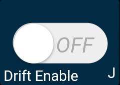
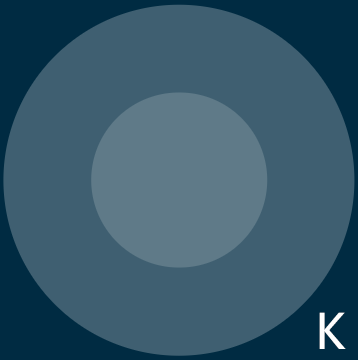

Note
Hallo und willkommen in der SunFounder Raspberry Pi & Arduino & ESP32 Enthusiasten-Gemeinschaft auf Facebook! Tauchen Sie tiefer ein in die Welt von Raspberry Pi, Arduino und ESP32 mit anderen Enthusiasten.
Warum beitreten?
Expertenunterstützung: Lösen Sie Nachverkaufsprobleme und technische Herausforderungen mit Hilfe unserer Gemeinschaft und unseres Teams.
Lernen & Teilen: Tauschen Sie Tipps und Anleitungen aus, um Ihre Fähigkeiten zu verbessern.
Exklusive Vorschauen: Erhalten Sie frühzeitigen Zugang zu neuen Produktankündigungen und exklusiven Einblicken.
Spezialrabatte: Genießen Sie exklusive Rabatte auf unsere neuesten Produkte.
Festliche Aktionen und Gewinnspiele: Nehmen Sie an Gewinnspielen und Feiertagsaktionen teil.
üëâ Sind Sie bereit, mit uns zu erkunden und zu erschaffen? Klicken Sie auf [hier] und treten Sie heute bei!
18. APP Control Plus
Dieses Projekt integriert die Funktionen Linienverfolgung, Folgen und Vermeiden basierend auf 17. APP-Steuerung.
Note
Bitte installieren Sie den SunFounder Controller aus dem APP Store(iOS) oder Google Play(Android).
Wie funktioniert das?
Der ESP32-CAM und das Arduino-Board teilen sich die gleichen RX (Empfang) und TX (Senden) Pins. Beim Hochladen des Codes müssen Sie zuerst den ESP32-CAM trennen, um Konflikte oder potenzielle Probleme zu vermeiden.

Öffnen Sie die Datei
18_app_control_plus.inoim Pfadzeus-car-main\examples\18_app_control_plus.Nachdem der Code erfolgreich hochgeladen wurde, können Sie das ESP32-CAM einstecken und dann den Stromschalter auf EIN schieben, um das Zeus-Auto zu starten.
Schalten Sie den Upload-Schalter auf die Seite von “Run” (rechte Seite in dieser Darstellung), um die ESP32 CAM zu starten.

Drücken Sie die Reset-Taste, um das Programm des Arduino-Boards erneut zu starten.

Verbinden Sie sich mit dem
Zeus_CarWLAN.Verbinden Sie nun Ihr Mobilgerät mit dem lokalen Netzwerk (LAN), das vom Zeus Car bereitgestellt wird. Auf diese Weise befinden sich Ihr Mobilgerät und der Zeus Car im selben Netzwerk, was die Kommunikation zwischen den Anwendungen auf Ihrem Mobilgerät und dem Zeus Car erleichtert.
Finden Sie
Zeus_Carim WLAN Ihres Mobiltelefons (Tablet), geben Sie das Passwort12345678ein und verbinden Sie sich damit.
Der Standardverbindungsmodus ist der AP-Modus. Nach der Verbindung erhalten Sie daher eine Meldung, dass dieses WLAN-Netzwerk keinen Internetzugang hat. Bitte wählen Sie “Weiter verbinden”.

Erstellen Sie einen Controller.
Um auf dem SunFounder Controller einen Controller hinzuzufügen, klicken Sie auf das + Symbol.

Voreingestellte Controller sind für einige Produkte verfügbar. Hier wählen wir Zeus Car. Geben Sie ihm einen Namen oder tippen Sie einfach auf Confirm.

Einmal drinnen, wird die App automatisch nach dem Zeus Car suchen. Nach einer Weile erscheint eine Meldung, die besagt “Connected Successfully”.

Tippen Sie nun auf die
 Schaltfläche. Dadurch können Sie das Live-Video von der Kamera anzeigen und das Auto mit den bereitgestellten Widgets steuern.
Schaltfläche. Dadurch können Sie das Live-Video von der Kamera anzeigen und das Auto mit den bereitgestellten Widgets steuern.

Hier sind die Funktionen der Widgets.
Calibration(E): Kompasskalibrierung einschalten.
Stop(F): Stoppen Sie alle Bewegungen des Autos.
Reset Heading(G): Nachdem Sie das Auto manuell in eine Richtung ausgerichtet haben, klicken Sie auf dieses Widget, um diese Richtung als Vorderseite der Autobewegung festzulegen. Damit können Sie schnell eine Richtung angeben, anstatt das Auto langsam mit anderen Widgets in diese Richtung zu drehen.
Speech(I): Wechseln Sie in den Sprachsteuerungsmodus.
Drift Enable(J): Aktivieren Sie die Drift-Funktion.
Move in All Directions(K): Steuern Sie das Auto in alle Richtungen.
Line Track: Die folgenden beiden Widgets können beide in den Linienverfolgungsmodus wechseln.
Linie ohne Mag(M): Wechseln Sie in den Linienverfolgungsmodus, der nicht vom Magnetfeld beeinflusst wird. Während des Linienverfolgungsvorgangs wird sich die Ausrichtung des Zeus Car ständig ändern.
Linie(N): Wechseln Sie in den Linienverfolgungsmodus. Aufgrund des Vorhandenseins eines Magnetfelds wird sich die Ausrichtung des Zeus Car während der Linienverfolgung in eine bestimmte Richtung orientieren.
Follow(O): Wechseln in den Verfolgungsmodus.
Avoid(P): Wechseln in den Hindernisvermeidungsmodus.
Control the Drection(Q): Dient zur Steuerung der Kopfrichtung.
{kind=link}
Kalibrierung(E)
Aktivieren Sie die Kompasskalibrierung, indem Sie auf die Schaltfläche  klicken.
klicken.
Stellen Sie das Zeus-Auto auf den Boden. Nach dem Aktivieren der Kompasskalibrierung beginnt das Auto, sich gegen den Uhrzeigersinn zu drehen und stoppt nach etwa 1 Minute. Wenn es länger als 2 Minuten dreht, ist das Magnetfeld hier kompliziert. Versuchen Sie, den Standort zu wechseln und erneut zu kalibrieren.
Drift aktivieren(J)
Klicken Sie auf die Schaltfläche , um die Drift-Funktion zu aktivieren.
{kind=link}
Wenn Sie das Widget
 gegen den Uhrzeigersinn verschieben, wird das Zeus-Auto nach rechts driften. Beim Loslassen der Hand wird das Auto an seiner aktuellen Position anhalten.
gegen den Uhrzeigersinn verschieben, wird das Zeus-Auto nach rechts driften. Beim Loslassen der Hand wird das Auto an seiner aktuellen Position anhalten.
Ähnlich wird das Zeus-Auto nach links driften, wenn Sie das Widget
im Uhrzeigersinn verschieben und an der aktuellen Position anhalten.

In alle Richtungen bewegen(K)
Das Zeus-Auto bewegt sich in die entsprechende Richtung, wenn Sie das Widget  wischen.
{kind=link}

Das Auto bewegt sich jedes Mal, wenn Sie wischen. Wenn Sie Ihre Hand die ganze Zeit nicht loslassen, bleibt das Auto in Bewegung.

Linie(N)
Klicken Sie auf das Widget  , um in den Linienverfolgungsmodus zu wechseln.
, um in den Linienverfolgungsmodus zu wechseln.
Es stehen zwei Modi der Linienverfolgung im Zeus-Auto zur Verfügung: Ein Modus, bei dem der Kopf stets in Bewegungsrichtung zeigt, und ein Modus, bei dem der Kopf in eine feste Richtung zeigt. Hier wird der zweite Modus ausgewählt.
Legen Sie eine 3 cm breite Linie an.
Es gibt acht Sensoren am Omni-Graustufen-Modul und der Abstand zwischen jedem Sensor liegt zwischen 2 und 3 cm. Mindestens zwei Sensoren müssen die schwarze Linie gleichzeitig erkennen. Daher muss die von Ihnen angelegte Linie mindestens 3 cm breit sein und der Biegungswinkel darf nicht kleiner als 90° sein.

Kalibrieren Sie das Omni-Graustufen-Modul.
Da jeder Untergrund unterschiedliche Graustufenwerte hat, ist der werkseitig eingestellte Graustufen-Schwellenwert möglicherweise nicht für Ihre aktuelle Umgebung geeignet. Daher müssen Sie dieses Modul vor der Verwendung kalibrieren. Es wird empfohlen, dies bei jeder wesentlichen Bodenfarbänderung erneut durchzuführen.
Stellen Sie das Zeus-Auto auf eine weiße Oberfläche und drehen Sie das Potentiometer so, dass das graue Sensorsignal gerade aufleuchtet.

Lassen Sie die beiden Graustufensensoren an der Seite genau zwischen der schwarzen Linie und der weißen Oberfläche positionieren und drehen Sie das Potentiometer langsam, bis die Signalanzeige gerade erlischt.

Sie können mehrfach über die schwarze Linie und die weiße Oberfläche fahren, um sicherzustellen, dass die Lichter des Graustufensensors aus sind, wenn sie sich zwischen der schwarzen Linie und der weißen Oberfläche befinden, und an, wenn sie sich auf der weißen Oberfläche befinden. Dies zeigt an, dass das Modul erfolgreich kalibriert wurde.
Platzieren Sie das Zeus-Auto auf Ihrer angebrachten Linie, klicken Sie auf das Widget
und es wird der Linie folgen.Aufgrund der hohen Umgebungsanforderungen des Omni-Graustufen-Moduls wird empfohlen, es mehrmals zu kalibrieren, wenn der Verfolgungseffekt nicht zufriedenstellend ist (Abweichen von der Linie).
Folgen(O)
Klicken Sie auf das Widget  , um in den Folgemodus zu wechseln.
, um in den Folgemodus zu wechseln.
Der Ultraschallsensor erkennt Hindernisse vorne (20 cm) und folgt ihnen. Diese beiden Hindernisvermeidungsmodule ermöglichen es dem Auto, nach links oder rechts zu folgen, müssen jedoch vor der Verwendung kalibriert werden (15cm).
Kalibrieren Sie das IR-Hindernisvermeidungsmodul.
Platzieren Sie ein Hindernis etwa 15 cm vom IR-Hindernisvermeidungsmodul entfernt.
Am Modul befinden sich zwei Potentiometer, eines zur Anpassung der Sendeleistung und eines zur Anpassung der Sendefrequenz. Durch Anpassen dieser beiden Potentiometer können Sie den Erfassungsabstand einstellen.
Dann können Sie ein Potentiometer einstellen und wenn bei 15cm das Signallicht am Modul aufleuchtet, ist die Einstellung erfolgreich; wenn nicht, stellen Sie das andere Potentiometer ein.

Kalibrieren Sie das andere Hindernisvermeidungsmodul auf die gleiche Weise.
Stellen Sie das Zeus-Auto auf einen Tisch oder den Boden und lassen Sie es Ihrer Hand oder anderen Hindernissen folgen.
Vermeiden(p)
Wenn Sie in den Hindernisvermeidungsmodus wechseln möchten, klicken Sie auf das Widget  . Beachten Sie jedoch zuerst die Referenz Follow(O), um die beiden Hindernisvermeidungsmodule zu kalibrieren.
. Beachten Sie jedoch zuerst die Referenz Follow(O), um die beiden Hindernisvermeidungsmodule zu kalibrieren.
Das Zeus-Auto fährt vorwärts.
Ein Ultraschallmodul erkennt Hindernisse vorne. Wenn ein Hindernis erkannt wird, dreht sich das Auto nach links.
Wenn das linke Hindernisvermeidungsmodul ein Hindernis erkennt, dreht sich das Auto nach rechts und wenn das rechte Hindernisvermeidungsmodul ein Hindernis erkennt, dreht sich das Auto nach links.
Die Richtung steuern(Q)
Wenn die Schaltfläche aktiviert ist, wird das Widget
verwendet, um das Zeus-Auto links und rechts driften zu lassen.Wenn das Widget deaktiviert ist, wird das Widget
verwendet, um die Richtung des Auto-Kopfes zu steuern.Wenn Sie das Widget
gegen den Uhrzeigersinn verschieben, wird das Auto ebenfalls gegen den Uhrzeigersinn drehen. Wenn Sie die Hand loslassen, kehrt der Kopf des Autos in die ursprüngliche Richtung zurück.

Ebenso wird das Auto mit dem Widget
im Uhrzeigersinn drehen und bei Loslassen in die ursprüngliche Richtung zurückkehren.